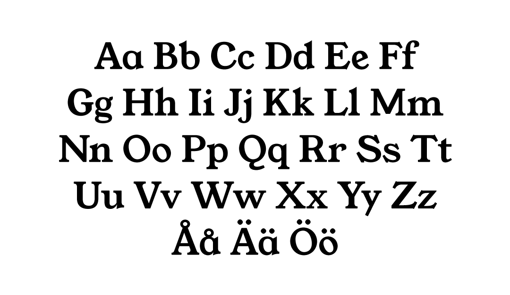

1. Background
The auditing agency We Audit came to Hyper Island to get a brand makeover. They wanted a brand strategy and identity that represented them better. We Audit is leveraging todays digital technology to innovate within the auditing sector, and they want to communicate that they are revolutionary in their market and not afraid to stand out.
2. Research
We started the project by discussing and de-briefing with our client. After that we went out in the field to get a better understanding of
- We Audit and its internal culture
- The auditing market
- Their competitors
- Their customers
We looked into trend reports from auditing organizations, interviewed and sent out questionnaires to employees and customers.
From the interviews and questionnaires sent out to We Audit's employees, we understood that the company had a friendly and informal attitude - something that differs from the stereotype that auditors and accountants are stiff people.
This was internal culture was something that something that their customers noticed and appreciated, 56% said that they believe a friendly and human attitude is important when selecting an auditing agency. But their customers also said that it is important that the friendly attitude is balanced with professionalism - the majority of the respondants get an auditor to make sure that there books are correct and to get good advice on how to run their business.
3. Ideation
To finish up the research and start ideating we invited the client to an ideation workshop. We showed some of the research findings, challenged our assumptions by letting the client agree or disagree with some assumption statements and let the client position themselves on a brand positioning map based on some of our research findings.
4. Delivered strategy and visuals
The first part of our deliveries was the internal core values we defined for We Audit
- Stress-less
- Humanized
- Adaptive
- Revolutionary
These were used as a basis for our design principles and later also implemented in the employee guidelines.
From the workshop we learned that We Audit needs to balance being fun, informal and serious. Something that can be conflicting. To solve this we created a layered personality strategy where the primary personality is based on giving a serious impression and the secondary personality stands out by adding a layer of being fun and informal. Depending on the touchpoint, we then dial up or down the secondary personality.
From the core values we defined the design principles Bold, Flexible, Happy and Minimal.


To stand out in the market, the secondary personality is dialed up. To let the customer focus on the quality and contents of a report, the secondary personality is dialed down. By using different brand elements you can balance the personalities to meet touchpoint expectations. For example, if a user is going to enter card information, the brand should be more serious and toned down. In that case you would avoid adding the secondary personality.
Together with the new brand strategy we delivered an updated logo, new colors, typography guidelines, patterns and photography guidelines.
